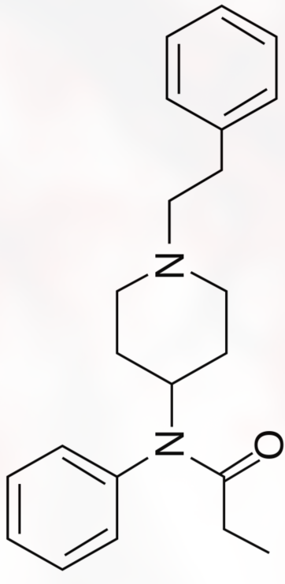

From Silk Road’s Amazon-style storefronts to encrypted Telegram channels selling fentanyl by the gram — how the internet transformed the global narcotics trade, who is dying as a result, and why law enforcement keeps dismantling markets that reopen within weeks.
“Silk Road was a black market bazaar. But its real innovation wasn’t the drugs — it was trust. It turned anonymous strangers into reliable trading partners.”
Andy Greenberg, Wired — paraphrasedThe online drug trade is one of the most consequential and structurally innovative categories of internet crime. What began with Silk Road in 2011 — a dark web marketplace modelled on Amazon, complete with user reviews, dispute resolution, and escrow payments — has evolved into a sprawling, decentralised global narcotics economy operating across Tor-based markets, encrypted messaging applications, and increasingly ordinary social media platforms.
The internet did not create the drug trade. It restructured it. It removed the need for in-person transactions, eliminated traditional territorial gang hierarchies, and for the first time gave individual buyers access to international wholesale supply chains. It also moved much of the associated violence off the streets and behind screens — while creating entirely new vectors of harm, most critically the fentanyl supply chain.
This report traces the evolution of the online drug market from its origins in 2011 to its current fragmented, platform-agnostic form; examines the mechanics of how these markets operate; analyses the role of cryptocurrency in enabling them; and assesses the track record — and limitations — of law enforcement operations against them.
The market has never stood still. Each law enforcement action has spurred adaptation, decentralisation, and technical innovation — a cycle that continues today.
Founded by Ross Ulbricht (known online as ‘Dread Pirate Roberts’), Silk Road launched on the Tor anonymity network and accepted Bitcoin for transactions. It was modelled on a free-market utopia — a marketplace where any substance could be bought and sold between consenting adults. At its peak it listed over 10,000 drug products. Its review and reputation system made it arguably the first trusted anonymous marketplace in history.
Market InnovationThe FBI shut down Silk Road and arrested Ulbricht in a San Francisco library in October 2013. Approximately 26,000 Bitcoin were seized. Ulbricht was convicted of drug trafficking, money laundering, and conspiracy and sentenced to life without parole. Within weeks, Silk Road 2.0 launched, run by former moderators. The pattern of takedown-and-replacement would repeat for years.
TakedownSilk Road’s takedown did not suppress demand — it expanded the market. AlphaBay launched in 2014 and became the largest dark web marketplace in history, listing over 350,000 products at its peak — dwarfing Silk Road. Hansa Market emerged as a major European competitor. Dozens of smaller markets operated simultaneously, creating a competitive ecosystem with customer service, free shipping, and bulk discounts.
Market ExpansionIn a coordinated international operation, Europol and the FBI dismantled both AlphaBay and Hansa Market within days of each other. Dutch police had secretly taken over Hansa before its public shutdown, running it covertly for a month to collect intelligence on fleeing AlphaBay users. AlphaBay’s founder Alexandre Cazes was arrested in Thailand and died in custody. The operation was the most significant dark web law enforcement action in history at the time.
Historic TakedownRussia’s Hydra Market became the world’s dominant dark web marketplace — generating an estimated $1.37 billion in 2020 alone, according to Chainalysis. Hydra pioneered ‘dead drop’ delivery: sellers buried drugs in public locations and sent GPS coordinates to buyers. Hydra was finally seized by German authorities in April 2022 — but its closure accelerated fragmentation, with no single successor emerging.
Market ShiftFollowing repeated dark web takedowns, the drug trade has migrated significantly to mainstream encrypted platforms — especially Telegram. Drug dealers openly advertise in public Telegram channels, DM potential buyers, and use private channels for order fulfilment. Narcotics are also openly advertised via Instagram, TikTok coded posts, and Discord servers, representing a fundamental shift from the contained dark web ecosystem of the Silk Road era.
Current LandscapeDark web markets replicated legitimate e-commerce infrastructure — reviews, escrow, dispute resolution — to solve the core problem of trust between anonymous strangers.
The Tor network anonymises internet traffic by routing it through multiple encrypted relays. Dark web markets operate on .onion addresses — not indexed by search engines, accessible only through Tor Browser. This provides both seller and buyer anonymity from casual surveillance.
Bitcoin was the original payment method — pseudonymous but traceable on its public blockchain. Markets shifted toward privacy coins like Monero (XMR), which uses ring signatures and stealth addresses to make transactions genuinely untraceable. Monero has become the dominant currency on surviving dark web markets.
To prevent ‘exit scams’ — where market operators disappear with buyers’ funds — mature markets implemented escrow systems and later multi-signature cryptocurrency transactions, requiring both buyer and market to authorise a payment release.
The review system was Silk Road’s most disruptive innovation. Sellers built reputations over hundreds of transactions. Star ratings, written reviews, and dispute records were publicly visible — creating market incentives for product quality and reliable shipping.
Drugs are physically mailed using ordinary postal services — heavily vacuum-sealed, disguised in decoy packaging. Stealth packaging is a competitive differentiator advertised openly in vendor listings. Postal interception rates vary dramatically by country and volume.
Modern dealers frequently operate via Telegram bots that automate ordering, collect addresses, and process cryptocurrency payments without human interaction. Some networks operate via Instagram DMs and coded social media posts directing buyers to encrypted channels.
Every significant market has been seized or shut down — yet the trade persists. This is the record.
The original. Ross Ulbricht’s Amazon-for-drugs on the Tor network. Accepted Bitcoin. Launched the entire dark web market ecosystem. Seized and shut down by the FBI in October 2013 after generating an estimated $1.2 billion in sales.
Seized — 2013The largest dark web market in history at its peak, with over 350,000 product listings. Founded by Alexandre Cazes. Dismantled in Operation Bayonet by Europol and FBI. Cazes arrested in Thailand; died in custody days later.
Seized — 2017Major European competitor to AlphaBay. Covertly taken over and operated by Dutch police for one month before shutdown, harvesting user intelligence from buyers fleeing the AlphaBay collapse. A significant intelligence operation.
Seized — 2017Russia’s dominant marketplace and briefly the world’s largest. Generated $1.37 billion in 2020 alone. Pioneered ‘dead drop’ delivery using GPS coordinates. Servers seized by German Federal Criminal Police (BKA) in April 2022.
Seized — 2022No single successor has consolidated the market Hydra served. Multiple smaller markets (MEGA, RuTor, Blacksprut) emerged in the Russian-speaking space, operating in a more fragmented, competitive environment with no dominant player.
Fragmented — ActiveThe current primary infrastructure for retail drug sales in many markets. Public Telegram channels, automated bots, Instagram DMs, and TikTok referrals have partially supplanted dedicated dark web markets for many buyers who prefer convenience over anonymity.
Active — Growing
The most deadly consequence of the online drug trade is not the trade in traditional narcotics — it is the distribution of illicitly manufactured fentanyl (IMF), a synthetic opioid 50 to 100 times more potent than morphine. A lethal dose is approximately two milligrams — an amount invisible to the naked eye.
Fentanyl is not only sold as fentanyl. It is pressed into counterfeit pills designed to look identical to legitimate prescriptions — OxyContin, Xanax, Adderall — and sold through online channels to buyers who may not know what they are taking. The DEA has reported that six in ten counterfeit pills seized in the US contain a potentially lethal dose of fentanyl.
The online drug trade has also widened access geographically. Users in regions previously underserved by traditional street-level drug supply — rural areas, small towns — can now order narcotics for postal delivery. This democratisation of access, combined with unpredictable fentanyl contamination, has driven mortality in areas that had no significant drug infrastructure a decade ago.
Cryptocurrency was not designed for criminal use — but its early pseudonymity made it the natural infrastructure for the online drug trade. The relationship has evolved significantly as blockchain analytics have matured.
Silk Road’s adoption of Bitcoin was transformational. But Bitcoin’s public blockchain is fully transparent — every transaction permanently recorded. Blockchain analytics companies (Chainalysis, Elliptic) have become highly effective at tracing Bitcoin flows from known dark web market wallets, leading to numerous arrests and seizures years after original transactions.
Monero uses ring signatures, stealth addresses, and RingCT to make transactions genuinely untraceable — sender, receiver, and amount are all obfuscated. Most serious dark web markets now require or strongly prefer Monero. It has become sufficiently threatening to law enforcement that several major exchanges have delisted it under regulatory pressure.
Cryptocurrency mixers pool multiple users’ Bitcoin and return equivalent amounts from unrelated wallets, obscuring the transaction trail. The US Treasury’s 2022 sanctions against Tornado Cash — a cryptocurrency mixer — marked the first time a software protocol itself was sanctioned, establishing significant new legal precedent.
Drug proceeds in cryptocurrency must be converted to usable currency without triggering anti-money-laundering (AML) detection. Common methods include: using peer-to-peer exchanges with no identity verification; converting to privacy coins before cashing out; using multiple exchange accounts across different jurisdictions; and ‘chain-hopping’ across different blockchains.
Regulation is tightening significantly. The Financial Action Task Force (FATF) ‘Travel Rule’ now requires exchanges in many jurisdictions to collect and transmit information about the originators and beneficiaries of cryptocurrency transactions. This is materially increasing the risk for operators attempting to launder drug proceeds through regulated exchanges.
Law enforcement has achieved significant operational successes against online drug markets — but each takedown has been followed by rapid market regeneration, raising fundamental questions about the strategy’s long-term effectiveness.
A coordinated Europol and FBI operation in 2014 seized 17 dark web markets and hundreds of associated .onion addresses. It demonstrated unprecedented cross-border cooperation but had limited lasting impact — replacement markets launched within days.
2014 · Europol / FBIThe landmark 2017 operation that dismantled the two largest dark web markets simultaneously. The covert Dutch takeover of Hansa harvested user data from buyers who believed they had escaped the AlphaBay closure. Still considered the high-water mark of dark web law enforcement.
2017 · Europol / FBI / Dutch PoliceA coordinated 2021 operation resulting in 150 arrests, 26 million euros in cash and cryptocurrency seized, and 45 firearms recovered. Targeted vendors and buyers identified from seized dark web market databases. Illustrated the delayed but long reach of forensic blockchain analysis.
2021 · Europol / 8 NationsGerman BKA (Federal Criminal Police) shut down Hydra Market’s servers in 2022, seizing 543 Bitcoin. The closure triggered significant market fragmentation but no clear successor consolidated the Russian-speaking market Hydra had served.
2022 · German BKA / US DOJDespite consistently impressive operational successes, the structural reality is that dark web drug market takedowns have a measurable but limited long-term impact on drug availability. Research tracking dark web market prices and availability before and after major seizures has found minimal sustained price increases or supply disruptions lasting more than a few months.
The reasons are structural: the entry costs for launching a new marketplace are low; vendor reputation systems allow sellers to rebuild trust rapidly; and buyer demand is inelastic. Takedowns also have a concentration effect — by eliminating larger, more established markets with better security practices, they can push the trade toward smaller, less secure platforms.
The online drug trade raises a genuine and contested policy question: do dark web drug markets, despite their illegality, reduce certain categories of harm compared to street-level drug supply?
Test your knowledge on the online drug trade and all other internet crime topics — 10 randomised questions, no time limit.
Take the Quiz →